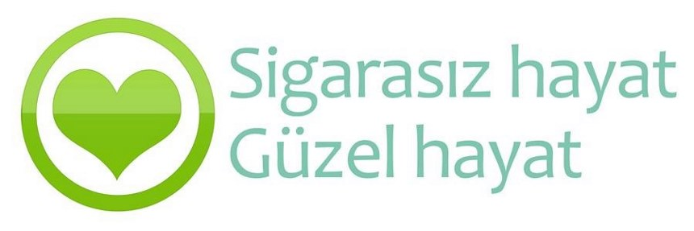
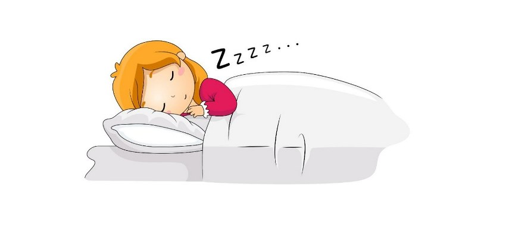

BUGÜN KALBİN İÇİN NE YAPTIN? 🌝❤
Aslında kalbimiz herhangi bir rahatsızlıktan önce bize birçok şey söylemekte.
Fakat hayat telaşından kalbimizi dinleyemiyoruz 🤔😕
Biraz mola verip kendinizi dinleyin ve bize kulak verin
Doktor Kontrolü:
20 yaşına gelen herkesin kardiyolojik check-up’tan geçmesi gerekmektedir. Bulgular normalse 30 yaşına kadar 5 yılda bir kontrol yeterli olabilir. Eğer her şey yolundaysa 30-40 yaş arası her 3 yılda bir kontrollere gidilmelidir. Ancak bir sorun olması halinde bu aralık bir yıla düşmektedir. 40 yaşından sonra görülme sıklığı arttığı için, kişinin risk faktörlerinin de durumuna göre 1-3 yılda bir kardiyoloji uzmanına muayene olması gerekir. Kişi, 50 yaşını geçtiyse yılda bir kez yaptıracağı kontrolleri aksatmamalıdır.
Kan Şekeri Takibi:
Yüksek kan şekeri kalp ve damar sağlığını bozarak göz, sinir ve böbrek hasarlarına, kalp krizi ve inmeye neden olabilir. Şeker hastalarında kalp hastalığı ya da felç riski 2-5 kat daha fazladır.
Tansiyon Kontrolü:
Yüksek tansiyon kalbin iş yükünü artırır ve atardamarlara zarar verir. Zaman içerisinde özellikle kalp, böbrek, göz ve beyne kan götüren atardamarlarda hasar oluşur.
Kalp, böbrek, göz ve beyin damarları bu yüksek basınca uzun yıllar boyunca sessizce direnebilir. Bu nedenle kan basıncındaki yükselme yıllarca belirti vermeden, tamamen sessiz ve sinsi bir şekilde ilerleyebilir. Ancak bu zarar vermediği anlamına gelmez. Yüksek tansiyon tedavi edilmediğinde, tüm vücuttaki atardamarlara ve yaşamsal önemi olan organlara hasar verebilir. Beyin kanaması ve felç, kalp yetersizliği ve kalp krizi, böbrek yetmezliği, görme kaybı gibi hastalıklara neden olabilir.
Düzenli Beslenme:
Kalp ve damar hastalıkları, tüm dünyada ölüm nedenleri arasında ilk sırada yer almaktadır. Kalp ve damar hastalıkları, sağlıklı beslenme alışkanlıkları ve sağlıklı bir yaşam şekli ile önlenebilmektedir. Genetik faktörler çok önemli bir etken olsa da, yüksek kilo, karın ve bel bölgesi yağlanması, hatalı beslenme davranışları, hareketsiz yaşam, sigara ve alkol tüketimi kalp hastalıkları görülme riskini arttırmaktadır.
Düzenli Egzersiz:
Günümüz teknolojinin sunduğu otomobil, yürüyen merdiven ve asansör gibi imkanlar nedeniyle gün geçtikçe daha az hareket etmeye başladık. Oysa fiziksel aktivite azlığı ve fizik kondisyon yetersizliği kalp damar hastalıkların oluşumunda önemli risk faktörüdür. Kalp sağlığınız için haftanın 3 günü en az 30 dakika egzersiz yapmaya özen gösterin. Unutulmamalıdır ki, fiziksel egzersizin yararlı olanı düzenli şekilde yapılanıdır.
Sigarasız Yaşam:
Günümüzde sigara önlenebilir ölüm sebepleri içinde ilk sırada yer almaktadır. Sigara kullanımı, kalp damarlarının tıkanmasına dolayısıyla kalp krizine sebep olmaktadır. "Sigarayı bırakmak için hiçbir zaman geç kalmış sayılmazsınız"
İyi Uyku:
Uyku düzensizliği ve az uyumak kalp sağlığını önemli derecede etkiliyor. Yapılan bilimsel çalışmalara göre, özellikle 7 saatten az uykunun, kalp krizi riskini önemli ölçüde yükselttiği tespit edilmiş.
Daha Az Stres:
Kalp sağlığınız içi stresi azaltın. Stres vücutta adrenalini arttırarak kronik olarak kalp hızınızı ve tansiyonunuzu yükseltir. Yoga, meditasyon, solunum egzersizleri ile stresin vücudunuzdaki etkilerini mümkün olduğunca azaltmaya çalışın.